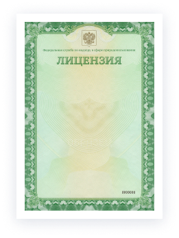
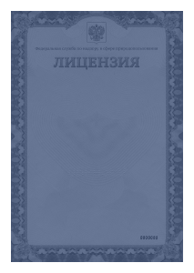

О враче
Специализация
Ортопед-травмотолог, детский хирург
Категория
Первая
Стаж
Ортопед-травмотолог, детский хирург
Стоимость приема
от 1600 ₽
Кручинин Дмитрий Кириллович
Врач - детский хирург, врач-ортопед-травматолог, диплом выдан Ростовским Государственным медицинским институтом в 1995г., специальность - педиатрия, квалификация - врач-педиатр, сертификат специалиста выдан ФГБОУ ВО РостГМУ Минздрава России 27.11.2017г., специальность - детская хирургия, сертификат специалиста выдан ГБОУ ВПО РостГМУ Минздрава России 17.06.2016г. специальность - травматология и ортопедия.


